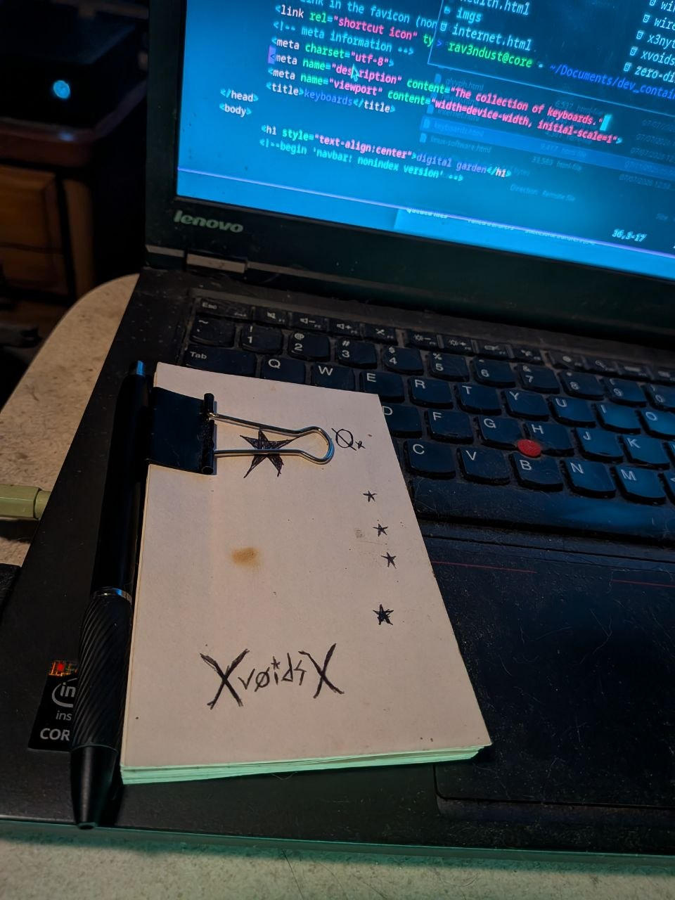

now | blog | wiki | recipes | bookmarks | contact | about | donate
* * * back home * * *
a simple way to keep your notes close

The "Hipster PDA", otherwise dubbed the HPDA, is a simple way for you to keep your notes organized in a physical fashion. You can even consider it a "paper computer" if you want.
An HPDA is made by taking a stack of index cards and keeping them together by clipping them with a binder clip. As you can tell from the photo, I clip mine close to the top and attach my ink pen to the left side of the notebook for easy access when I want to write something down.
I used to keep a small notebook around, but was inspired to make an HPDA after reading about it on Devine Lu Linvega's blog several years ago. Since then, I have kept mine around and it goes everywhere with me. I use it for taking random notes, making groceries lists, keeping a physical version of my list of tasks for the day, and more.
I definitely recommend making one if you want a customized way of keeping your notes organized together.